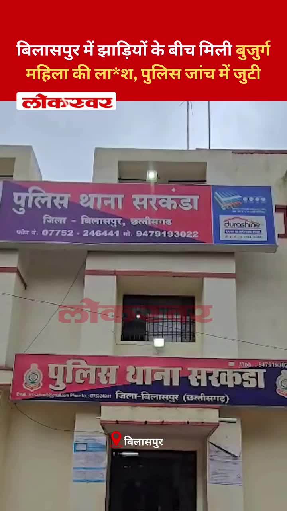
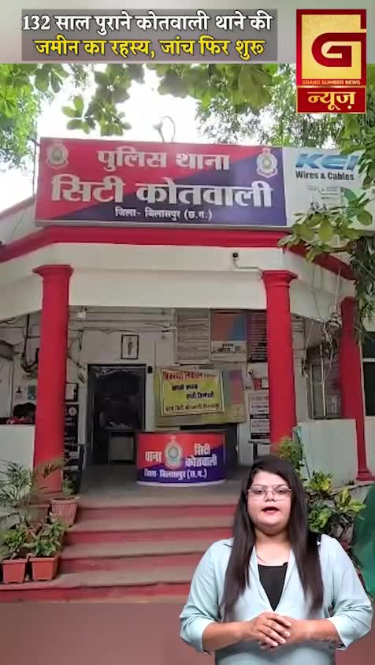
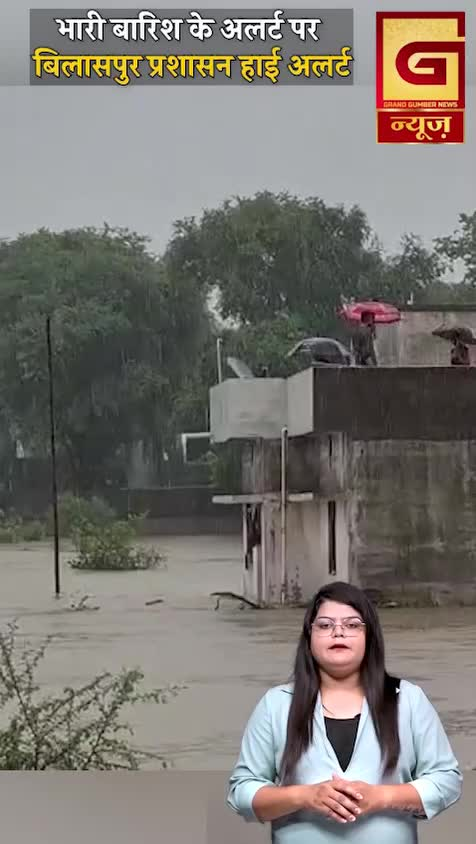
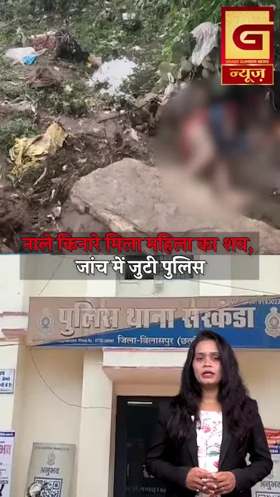
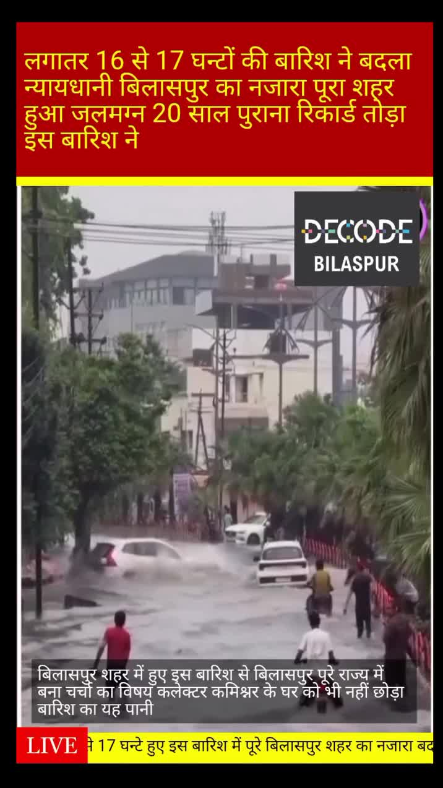
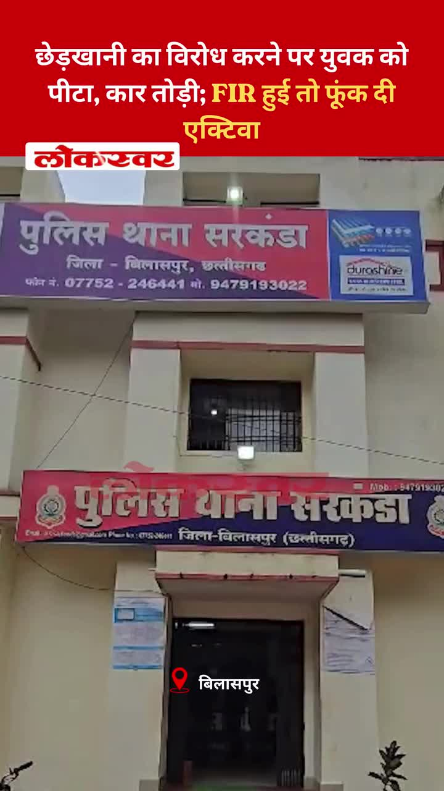
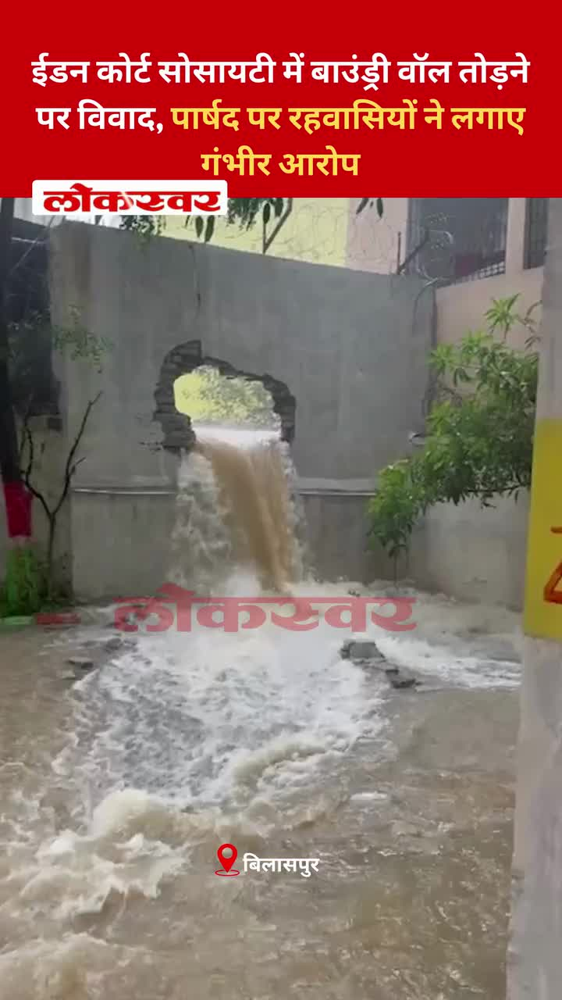
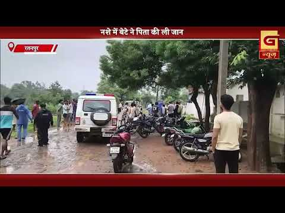

Bilaspur News Hub
1
BUSINESS
6
EDUCATION
3
EVENT
17
GOVERNMENT
4
HEALTH
5
INFRASTRUCTURE
55
INSTAGRAM NEWS
21
NEWS
9
POLICE
4
RAILWAY
2
SOCIAL
9
YOUTUBE VIDEOS
BUSINESS1

The Hitavada · Scraped: 2026-07-18 07:32:40
From August 1, Air India Express will operate most of Air India’s flights, streamlining the airline’s services. This shift aims to improve efficiency and passenger experience under the new brand structure.
EDUCATION6

Nai Dunia Bilaspur · Published: Sat, 18 Ju | Scraped: 2026-07-18 09:27:03
A division bench of the High Court dismissed the plea of 27 teachers seeking promotion and seniority benefits, stating the matter was already settled in a previous judgment, ending their long-standing hopes.

Nai Dunia Bilaspur · Published: Sat, 18 Ju | Scraped: 2026-07-18 11:06:50
The district collector announced a holiday for all schools in Bilaspur following a heavy rain warning. The decision aims to ensure student safety amid anticipated intense rainfall.

CG Wall · Published: Fri, 17 Ju | Scraped: 2026-07-17 17:07:12
Following 24 hours of heavy rainfall, the collector ordered some schools to remain closed while others will operate. The education department received instructions to implement the decision promptly.

The Hitavada · Scraped: 2026-07-18 07:32:40
A large number of aspirants, exceeding 2.7 lakh, abstained from the NEET-UG re-examination, citing various reasons. The development has raised concerns over exam integrity and potential impact on admissions.
District Administration Bilaspur · Published: 2026-07-17 | Scraped: 2026-07-17 11:25:21
The District Administration of Bilaspur has announced a recruitment for a special educator to serve at PMSHRI School, aiming to improve special education facilities in the district.

G News Bilaspur · Published: 2026-07-17 | Scraped: 2026-07-17 13:04:31
Students staged a road blockade in Bilaspur demanding a teacher's request be fulfilled. The protest caused traffic disruptions and drew local police attention. The issue highlights student activism over educational concerns.
EVENT3

The Hitavada · Scraped: 2026-07-18 09:27:03
The NDCA will host events to celebrate International Chess Day, promoting the game across schools and clubs. The initiative aims to boost awareness and participation in chess.

The Hitavada · Scraped: 2026-07-18 09:27:03
Shruti from Nagpur has qualified for the World Fencing Championship, representing India internationally and highlighting growing fencing talent in the region.
BREAKINGBilaspur submerged in first continuous monsoon rain / मानसून की पहली लगातार बारिश से बिलासपुर जलमग्न
G News Bilaspur · Published: 2026-07-17 | Scraped: 2026-07-17 15:11:35
The first continuous monsoon rain has left Bilaspur completely submerged, affecting daily life and infrastructure. Authorities are working to manage the overflow and provide relief to affected residents.
GOVERNMENT17

Nai Dunia Bilaspur · Published: Sat, 18 Ju | Scraped: 2026-07-18 04:43:47
An emergency alert was broadcast across Bilaspur at 10:50 pm, causing thousands of mobile phones to ring simultaneously. Residents were startled by the alert sound, highlighting the reach of the emergency alert system.

Nai Dunia Bilaspur · Published: Sat, 18 Ju | Scraped: 2026-07-18 09:27:03
The Chhattisgarh High Court ruled that routine domestic disputes, minor quarrels, or living apart do not constitute cruelty for granting divorce, clarifying legal standards for marital cruelty.

CG Wall · Published: Sat, 18 Ju | Scraped: 2026-07-18 09:27:03
The municipal corporation’s ₹125‑crore cleaning system failed during the first heavy rains, leaving Bilaspur flooded and raising questions about officials’ accountability. The disaster highlights poor infrastructure planning and delayed maintenance.

Nai Dunia Bilaspur · Published: Fri, 17 Ju | Scraped: 2026-07-17 11:25:22
The Chhattisgarh High Court ruled that a compassionate appointment cannot be granted if any family member already holds a government job, tightening eligibility criteria.

Lokswar · Published: Fri, 17 Ju | Scraped: 2026-07-17 11:25:22
Due to continuous heavy rainfall, Bilaspur district administration has gone on high alert. Collector Sanjay Agarwal directed officials to conduct relief and rescue operations. The move aims to protect residents from flooding and landslides.

CG Wall · Published: Fri, 17 Ju | Scraped: 2026-07-17 15:11:35
Heavy rainfall has brought judicial activities in Bilaspur to a standstill, prompting lawyers to request postponement of adverse orders. The district court could not function as waterlogged premises hindered access and operations.

Lokswar · Published: Fri, 17 Ju | Scraped: 2026-07-17 15:11:35
Following incessant rains, Amar Agarwal instructed officials to restore normal life in Bilaspur, focusing on clearing waterlogged areas and ensuring public convenience. The move aims to mitigate the disruption caused by flooding across the city.

CG Wall · Published: Fri, 17 Ju | Scraped: 2026-07-17 17:07:12
Senior Congress spokesperson Abhay Narayan Rai called on Bilaspur's elected officials to coordinate flood relief. He urged collective action to address waterlogging across the city.

The Hitavada · Scraped: 2026-07-18 09:27:03
Chief Minister Yogi Adityanath urged kanwariyas to keep discipline and curb anti-social elements during the pilgrimage. He stressed peaceful conduct and cooperation with authorities to ensure safety.

The Hitavada · Scraped: 2026-07-18 07:32:40
Madan Mitra, a TMC MLA, paid a visit to Chief Minister Mamata Banerjee’s camp, sparking political speculation. The move is seen as a significant shift within the party’s internal dynamics.
The Hitavada · Scraped: 2026-07-18 07:32:40
विकास गर्ग, महादेव ऑनलाइन सट्टेबाजी रैकेट से जुड़े, को जाँच के लिए 10 दिन की ईडी हिरासत में भेजा गया। मामले में अवैध सट्टेबाजी और मनी लॉन्ड्रिंग के आरोप हैं। अधिकारी नेटवर्क के दायरे और वित्तीय प्रवाह की जाँच कर रहे हैं।
The Hitavada · Scraped: 2026-07-18 07:32:40
शहरी निर्वाचन क्षेत्रों में SIR सत्यापन दर मात्र 26% है, जो ग्रामीण क्षेत्रों से पीछे है। यह अंतर स्थानीय शासन में पारदर्शिता को लेकर चिंताएँ पैदा करता है। अधिकारियों से सत्यापन प्रक्रिया में सुधार की अपील की जा रही है।
BREAKINGNo-confidence debate, heated exchanges rock House / अविश्वास प्रस्ताव पर बहस, हंगामे से सदन गूंजा
The Hitavada · Scraped: 2026-07-18 07:32:40
The no-confidence motion sparked intense arguments and disruptions in the legislative house. Members exchanged sharp words, highlighting deep political tensions.
The Hitavada · Scraped: 2026-07-18 07:32:40
Prime Minister Narendra Modi remotely inaugurated several development projects, boosting infrastructure and public services. The virtual event highlighted the government's focus on rapid progress.
District Administration Bilaspur · Published: 2026-07-18 | Scraped: 2026-07-18 07:32:40
The District Administration of Bilaspur has published the official Gazetteer documenting the region's history, geography, and administrative details. It serves as a comprehensive reference for officials, researchers, and the public.
District Administration Bilaspur · Published: 2026-07-18 | Scraped: 2026-07-18 07:32:40
The CEO of Chhattisgarh shared updates on social media regarding district development projects and welfare schemes for Bilaspur. The tweet highlights upcoming infrastructure and health initiatives.
G News Bilaspur · Published: 2026-07-17 | Scraped: 2026-07-17 13:04:31
The District Congress Committee has submitted a memorandum to the Collector concerning the Apollo case, highlighting concerns and demands. The move reflects ongoing political tension over the matter.
HEALTH4

Lokswar · Published: Sat, 18 Ju | Scraped: 2026-07-18 09:27:03
Another undertrial prisoner died while undergoing treatment at SimS hospital, Bilaspur, adding to three recent inmate fatalities including murder and accident cases. The deaths raise concerns over medical care in judicial custody.

Nai Dunia Bilaspur · Published: Fri, 17 Ju | Scraped: 2026-07-17 13:04:31
A violent clash erupted between a doctor and a nurse in the ICU of a private hospital in Bilaspur. Both parties have lodged police complaints, leading to an investigation. The incident highlights tensions in healthcare staffing.

The Hitavada · Scraped: 2026-07-18 07:32:40
A tragic accident left a 5-year-old deaf and mute girl with a broken toothbrush lodged in her throat, requiring emergency surgery. Medical teams are now treating her and monitoring her condition closely.

District Administration Bilaspur · Published: 2026-07-18 | Scraped: 2026-07-18 07:32:40
The Bilaspur District Administration has released guidelines for handling biomedical waste in Bilha to ensure safe disposal and prevent infections. The order emphasizes segregation, sterilization, and proper documentation.
INFRASTRUCTURE5

Nai Dunia Bilaspur · Published: Sat, 18 Ju | Scraped: 2026-07-18 04:43:47
Heavy rains inundated Bilaspur, submerging low‑lying settlements, VVIP colonies and railway tracks. Several MEMU and passenger trains were cancelled due to the flooding, disrupting daily life and transport.

Lokswar · Published: Sat, 18 Ju | Scraped: 2026-07-18 09:27:03
Heavy rain created a huge pit on the road at Power House Chowk, collapsing the surface and endangering traffic. Authorities warn of potential accidents as the damaged road remains unrepaired.

Nai Dunia Bilaspur · Published: Fri, 17 Ju | Scraped: 2026-07-17 11:25:22
Heavy rains in Bilaspur have flooded railway tracks at the station, waterlogged streets, and entered homes across several neighborhoods, disrupting daily life.

Lokswar · Published: Fri, 17 Ju | Scraped: 2026-07-17 13:04:31
Heavy monsoon rains caused widespread waterlogging across Bilaspur, paralyzing traffic and daily activities. Streets turned into rivers, affecting commuters and local businesses. Authorities are working to clear drains and issue travel advisories.
The Hitavada · Scraped: 2026-07-18 09:27:03
The Mehadia memorial snicket will open to the public from the 22nd, offering a new walking route through the memorial area and boosting local connectivity and tourism.
INSTAGRAM NEWS55
An Instagram post showcases vehicles navigating the rain‑slick streets of Bilaspur during the monsoon season. The scene captures the city's vibrant response to the weather and highlights the popularity of car culture amid seasonal rains.

मंडी भराड़ी फोरलेन पुल चौक में 24 घंटे पुलिस कर्मचारी तैनात करने के लिए पुलिस अधीक्षक बिलासपुर को दिया मांग पत्र। ।लाडली फाउंडेशन ने आईपीएस अभिषेक धीमान से किया शिष्टाचार भेंट एवं ज्ञापन सौंपा।लाडली फाउंडेशन जिला बिलासपुर जिला अध्यक्ष रेखा बिष्ट, उपाध्यक्ष नीलम सुद, आरती शर्मा, प्रीति भाटिया एवं प्रोमिला राजपूत ने लाडली फाउंडेशन ,रेनबो स्टार क्लब एवं हेल्पिंग हैंड्स के बैनर तले पुलिस अधीक्षक अभिषेक धीमान से शिष्टाचार भेंट की एवं हिमाचली टोपी एवं शाल देकर सम्मानित किया। इस मौके पर लाडली फाउंडेशन के पदाधिकारी ने पुलिस अधीक्षक अभिषेक धीमान से लिखित तौर पर ज्ञापन देकर मांग कि कि लाडली फाउंडेशन जनहित में आपसे मांग करती है कि सदर बिलासपुर ग्राम पंचायत नोणी के अंतर्गत मंडी भराड़ी फोरलेन पुल चौक जिला बिलासपुर में 24 घंटे पुलिस कर्मचारी तैनात किया जाएं। गोविंद सागर झील के साथ लगते मंडी भराड़ी पर्यटन स्थल के रूप में विश्व में उभर रहा by @bilaspur_today_news

बिलासपुर में झाड़ियों के बीच मिली बुजुर्ग महिला की ला*श, पुलिस जांच में जुटी #BilaspurCrime #SarkandaPolice #SarkandaNews #ChhattisgarhNews #CrimeUpdate by @lokswar.in
जिला बदर आरोपी ने पुलिस कार्यालय में किया हंगामा, पुलिस ने भेजा जेल#RaigarhCrime #ChhattisgarhPolice #LawAndOrder #CrimeUpdate #RaigarhPolice by @lokswar.in
Galliyan bhi nahi bachi 🥲⛈️#bilaspurct #bilaspur #hamarbilaspur #monsoonseason #monsoon by @bilaspurct
A drunken son murdered his father, leading to immediate police arrest. The case is under investigation, highlighting substance abuse dangers.

The police have resumed probing the ownership of a 10‑acre plot belonging to the historic 132‑year‑old City Kotwali building. The case may have implications for heritage preservation and municipal records.

Following a heavy rain warning, Bilaspur’s administration declared a high alert and shut down schools and anganwadi centres to protect children and villagers. The measure aims to prevent accidents and ensure public safety during the anticipated downpour.
Heavy rain caused waterlogging on NH-49 near Dhuma, prompting villagers to stage a chakka jam to demand immediate repair. The protest disrupted traffic for several hours, highlighting poor drainage infrastructure.
A massive sinkhole opened on PowerHouse Road in Torwa after heavy rains, sinking the road by 10-12 feet. Authorities sealed the area and averted a potential disaster, urging residents to avoid the route.

During heavy rains, a deceased elderly woman was discovered hidden in dense bushes near Sarkanda. Police have launched an investigation to determine the cause of death amid the surrounding mystery.
A man had been conversing with a woman for five months believing she was his girlfriend, only to find she was someone else when he visited her village. The incident highlights the dangers of online misidentification and emotional deception.

Following unprecedented rainfall on July 17, the entire city of Bilaspur was inundated, affecting roads, homes, and essential services. Authorities are working on drainage repairs and relief distribution to address the crisis.

छेड़खानी का विरोध करने पर युवक को पीटा, कार तोड़ी; FIR हुई तो फूंक दी एक्टिवा #BilaspurCrime #SarkandaPolice #AshokNagarNews #LawAndOrder #ChhattisgarhCrime by @lokswar.in
चांपा रेलवे स्टेशन का बदला स्वरूप, प्रधानमंत्री ने किया अमृत भारत स्टेशन का लोकार्पण #ChampaRailwayStation #AmritBharatStation #JanjgirChampa #RailwayInfrastructure #ChhattisgarhNews by @lokswar.in
बारिश में दलदल बना नेशनल हाईवे, डायवर्जन पर वाहन रेंगने को मजबूर #BilaspurNews #NationalHighway #Monsoon2026 #RoadSafety #ChhattisgarhNews by @lokswar.in
जलभराव से भड़के ग्रामीण, NH-49 पर चक्का जाम, 150 से ज्यादा घर डूबे, राहत और पुल निर्माण की मांग #BilaspurNews #ChakkaJam #NH49 #Monsoon2026 #ChhattisgarhProtest by @lokswar.in

ईडन कोर्ट सोसायटी में बाउंड्री वॉल तोड़ने पर विवाद, पार्षद पर रहवासियों ने लगाए गंभीर आरोप#BilaspurNews #SarkandaNews #GTEdenCourt #RaigarhMunicipalCorporation #ChhattisgarhNews by @lokswar.in
A humorous meme posted by @bilaspurct on Instagram featuring local hashtags and emojis. It reflects the playful social media culture among Bilaspur residents.
Heavy rainfall in Bilaspur caused flooding, submerging cars and prompting rescue operations. The event marks the highest 24-hour rainfall in two decades. Authorities are monitoring the situation.
NEWS21

Nai Dunia Bilaspur · Published: Sat, 18 Ju | Scraped: 2026-07-18 07:32:40
<img src="https://img.naidunia.com/naidunia/ndnimg/18072026/18_07_2026-lawyer_adm_office.jpg" />छत्तीसगढ़ के बिलासपुर में तहसील कार्यालय और न्यायालयों में नकल शाखा की लचर व्यवस्था और बाबूओं की मनमानी के खिलाफ अधिवक्ताओं का गुस्सा फूट पड़ा है।

CG Wall · Published: Sat, 18 Ju | Scraped: 2026-07-18 07:32:40
बिलासपुर… पहली ही मूसलाधार बारिश ने नगर निगम बिलासपुर के करोड़ों रुपये के सफाई दावों की ऐसी पोल खोली कि अब शहर की जनता सीधे सवाल पूछ रही है—जब हर साल 120 से 125 करोड़ रुपये सिर्फ सफाई पर खर्च हो रहे हैं तो आखिर शहर की यह दुर्दशा क्यों? सड़कें तालाब बन गईं, नालियां उफन …

Lokswar · Published: Sat, 18 Ju | Scraped: 2026-07-18 07:32:40
<p>(भूपेंद्र सिंह राठौर) : बिलासपुर में लगातार हो रही बारिश अब लोगों के लिए आफत बन गई है। धूमाधाम ग्राम पंचायत में जलभराव से परेशान ग्रामीणों का गुस्सा आखिरकार सड़क पर फूट पड़ा। रिमझिम बारिश के बीच सैकड़ों ग्रामीण राष्ट्रीय राजमार्ग-49 पर उतर आए और चक्का जाम कर दिया। ग्रामीणों का आरोप है कि पानी 
Lokswar · Published: Sat, 18 Ju | Scraped: 2026-07-18 07:32:40
<p>(भूपेंद्र सिंह राठौर) : जांजगीर-चांपा जिले के चांपा रेलवे स्टेशन को अब नया और आधुनिक स्वरूप मिल गया है। प्रधानमंत्री नरेंद्र मोदी ने वीडियो कॉन्फ्रेंसिंग के जरिए देशभर के 75 पुनर्विकसित अमृत भारत स्टेशनों का लोकार्पण किया, जिसमें बिलासपुर मंडल का चांपा स्टेशन भी शामिल रहा। 13 करोड़ रुपये की लागत

Lokswar · Published: Sat, 18 Ju | Scraped: 2026-07-18 07:32:40
<p>(भूपेंद्र सिंह राठौर) : बिलासपुर के सरकंडा स्थित जीटी ईडन कोर्ट रेजिडेंशियल सोसायटी में भारी बारिश के बीच बाउंड्री वॉल तोड़े जाने को लेकर विवाद खड़ा हो गया है। सोसायटी के पदाधिकारियों और रहवासियों ने स्थानीय पार्षद जय वाधवानी पर बिना अनुमति बाउंड्री वॉल तुड़वाने का आरोप लगाया है। मामले में एसपी,

Lokswar · Published: Fri, 17 Ju | Scraped: 2026-07-17 13:04:31
The India Meteorological Department has issued a red alert for excessive rainfall across Bilaspur and surrounding districts. Residents are advised to stay alert and avoid flood-prone areas. The monsoon surge threatens daily life and infrastructure.

CG Wall · Published: Fri, 17 Ju | Scraped: 2026-07-17 18:58:05
बिलासपुर…प्रदेश के चर्चित अपोलो अस्पताल में आयुष्मान भारत और डॉ. खूबचंद बघेल स्वास्थ्य सहायता योजना का लाभ आम मरीजों तक पहुंचाने की दिशा में शुक्रवार को बड़ा कदम उठता नजर आया। जिला प्रशासन की पहल पर कलेक्टर संजय अग्रवाल और पुलिस अधीक्षक रजनेश सिंह की मौजूदगी में अपोलो प्रबंधन और जिला कांग्रेस
Lokswar · Published: Fri, 17 Ju | Scraped: 2026-07-17 18:58:05
<p>(जयेन्द्र गोले) : बिलासपुर में हुई मूसलाधार बारिश ने पूरे शहर की रफ्तार थाम दी। शहर के कई इलाकों में जलभराव से जनजीवन अस्त-व्यस्त हो गया, वहीं सिरगिट्टी इंडस्ट्रियल एरिया भी बारिश की मार से नहीं बच सका। जल निकासी की व्यवस्था ध्वस्त होने के कारण औद्योगिक क्षेत्र में पानी भर गया। चावल मिल, ऑयल R
The Hitavada · Scraped: 2026-07-18 09:27:03
Aamir Khan commented that Wangchuk, the real-life inspiration for the film '3 Idiots', was not his muse. The remark sparked mixed reactions online, with fans debating the actor's choice of words.

The Hitavada · Scraped: 2026-07-18 09:27:03
A landslide in Chongqing, China, killed eight people, left 34 missing, and forced evacuation of 1,100 residents. Rescue teams are working to locate those trapped amid the disaster.
The Hitavada · Scraped: 2026-07-18 07:32:40
Sir Garry Sobers, legendary West Indian cricketer, died at 89 after a long career marked by extraordinary batting and bowling prowess. His contributions to cricket remain celebrated worldwide.
The Hitavada · Scraped: 2026-07-18 07:32:40
The US targeted strategic bridges and a port tower, while Iran responded with missile strikes in the Middle East. The escalating conflict raises regional tensions and concerns over civilian infrastructure.
The Hitavada · Scraped: 2026-07-18 07:32:40
मामला एक दुर्लभ कानूनी स्थिति को दर्शाता है जहाँ अदालत ने किसी भी पक्ष को औपचारिक रूप से दोषी या निर्दोष नहीं ठहराया। यह सबूत और अधिकार क्षेत्र की जटिलताओं को उजागर करता है। पर्यवेक्षकों ने इसे न्यायिक अस्पष्टता का एक क्लासिक उदाहरण बताया।
The Hitavada · Scraped: 2026-07-18 07:32:40
The Hitavada · Scraped: 2026-07-18 07:32:40
The Hitavada · Scraped: 2026-07-18 07:32:40
The Hitavada · Scraped: 2026-07-18 07:32:40
The Hitavada · Scraped: 2026-07-18 07:32:40
The Hitavada · Scraped: 2026-07-18 07:32:40
Heavy rain continues to lash the state, disrupting travel and daily activities. Authorities have warned residents about flooding and advised caution.
The Hitavada · Scraped: 2026-07-18 07:32:40
POLICE9

Lokswar · Published: Sat, 18 Ju | Scraped: 2026-07-18 04:43:47
In Tikrapara police station area of Raipur, five members of a family were discovered dead, raising suspicion of suicide. The incident has sent shockwaves through the community, and police are investigating the cause.
Lokswar · Published: Sat, 18 Ju | Scraped: 2026-07-18 09:27:03
In Saranda, a group of thugs beat a youth, vandalised his car and set his Activa on fire after he resisted harassment. The incident points to rising criminal aggression and law‑and‑order concerns.

Nai Dunia Bilaspur · Published: Sat, 18 Ju | Scraped: 2026-07-18 11:06:50
A trailer loaded with gravel lost control and overturned on the Bilaspur‑Ambikapur highway, crushing a female laborer who died at the scene. The incident highlights the dangers of overloaded vehicles on major roads.
Lokswar · Published: Sat, 18 Ju | Scraped: 2026-07-18 11:06:50
Police uncovered a land dispute murder where a couple was killed and their bodies burned. The investigation led to the arrest of two brothers responsible within just 72 hours.

Nai Dunia Bilaspur · Published: Fri, 17 Ju | Scraped: 2026-07-17 11:25:22
Bilaspur police succeeded in arresting the suspect who killed a watchman and fled to Prayagraj, while the hunt for his accomplice continues.
BREAKINGSons beats paralyzed father to death / कलयुगी बेटे ने लकवाग्रस्त पिता को डंडे से पीटकर मार डाला
Lokswar · Published: Fri, 17 Ju | Scraped: 2026-07-17 11:25:22
A son in Bilaspur brutally beat his paralyzed father to death with a stick, shocking the community. The incident, reported from Ratanpur police station, highlights a tragic breakdown of family bonds.

The Hitavada · Scraped: 2026-07-18 09:27:03
A minor girl was pushed to death in Ghaziabad, prompting police to act swiftly. Authorities arrested the stalker suspect, highlighting concerns over women's safety in the region.
The Hitavada · Scraped: 2026-07-18 07:32:40
समृद्धि एक्सप्रेसवे पर शराब पीकर गाड़ी चलाने वालों के खिलाफ 24 घंटे अभियान शुरू किया गया है। पुलिस ने रोकथाम और यादृच्छिक जाँच के लिए चौकियाँ स्थापित की हैं। यह अभियान दुर्घटनाओं को कम करने और सड़क सुरक्षा में सुधार लाने के उद्देश्य से है।

G News Bilaspur · Published: 2026-07-17 | Scraped: 2026-07-17 13:04:31
A son in Bilaspur allegedly murdered his elderly father after a violent altercation. The brutal beating led to the father's death, prompting a police investigation. The case has shocked the community and raised concerns about domestic violence.
RAILWAY4

The Hitavada · Scraped: 2026-07-18 07:32:40
The inaugural hydrogen-powered train marks a milestone in Indian rail transport, showcasing indigenous technology under the Make in India initiative. PM Modi highlighted its significance as a clean and self-reliant solution for the sector.

The Hitavada · Scraped: 2026-07-18 07:32:40
A tragic accident occurred when a train struck a pool car at an open level crossing, resulting in five fatalities. Authorities have launched an investigation into the circumstances surrounding the mishap.
The Hitavada · Scraped: 2026-07-18 07:32:40
The pilot of India's inaugural hydrogen train completed specialized training and expressed confidence in the train’s high safety standards. His endorsement underscores the reliability of the new eco-friendly rail technology.

The Hitavada · Scraped: 2026-07-18 07:32:40
सुप्रीम कोर्ट ने फैसला सुनाया कि ट्रेन टिकट के अभाव में रेलवे दुर्घटना के मुआवजे के दावे को खारिज नहीं किया जा सकता। इसने जोर दिया कि दावेदारों को लापरवाही साबित करनी होगी, न कि सिर्फ टिकट की। यह फैसला पीड़ितों को मुआवजा दिलाने का रास्ता खोलता है।
SOCIAL2

BREAKINGLaw student and SI's son commit suicide in Bilaspur, note says sorry / बिलासपुर में लॉ छात्र और एसआई के बेटे ने आत्महत्या की, सुसाइड नोट में लिखा 'सॉरी'
Nai Dunia Bilaspur · Published: Sat, 18 Ju | Scraped: 2026-07-18 09:27:03
A law student and the son of an SI in Bilaspur died by suicide after consuming poison in a rented room; both left behind suicide notes expressing remorse.
Oxygen cylinder delivered by boat during monsoon / बारिश के बीच नाव से ऑक्सीजन सिलेंडर पहुँचाकर मानवता का उदाहरण पेश
Lokswar · Published: Fri, 17 Ju | Scraped: 2026-07-17 11:25:22
Amid heavy rains, a compassionate individual used a boat to deliver an oxygen cylinder to a patient, showcasing community solidarity and aid.
YOUTUBE VIDEOS9
Bilaspur’s vital road link is stuck in debris and mud, disrupting movement and daily life. Residents demand swift clearance to restore the lifeline.
Villagers blocked NH-49 over severe waterlogging that has been disrupting traffic. The protest underscores poor road drainage and maintenance. Authorities have been urged to fix the issue promptly.


Morning final news bulletin for 18.07.2026 delivers latest updates and key headlines. It offers a concise daily overview to keep readers informed. Stay tuned for timely information.
Tokan Sahu shared his rise from village panch to parliament, emphasizing perseverance and challenges. His story inspires aspiring leaders and drew community attention.


The evening final news bulletin from Bilaspur Grand News on 17 July 2026 provides latest updates and headlines.
Heavy rainfall has caused Zorapaara area in Bilaspur to flood, affecting roads and homes. Authorities are working on drainage and relief measures.
A person tried to avoid appearing in court but was caught, leading to legal action. The incident highlights strict enforcement of judicial processes.
The Bahujan Samaj Party (BSP) staged a protest in Bilaspur demanding justice for Narendra Khande's murder, alleging police inaction. The demonstration called for a swift investigation and accountability.
GRAND NEWS BILASPUR:बिलासपुर में जलप्रलय 25 साल का रिकॉर्ड टूटा ...